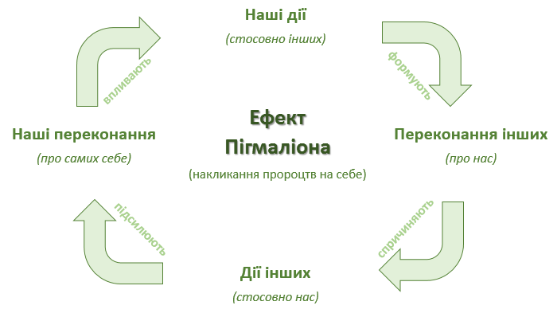

Ефект Претфелла. Якщо ви недосконалі, люди будуть любити вас більше
Коли ми хочемо зробити на когось враження, то неминуче
витягуємо назовні кращі сторони своєї особистості. Виявляється, зовсім
даремно: дослідження показують, що демонстрація своєї уразливості
слабкості, навпаки, підвищує рівень емпатії до нас з боку інших людей.
Чим більше y вас некритичних недоліків, тим краще до вас будуть
ставитися люди. Професор, який виступає перед аудиторією помітно
хвилюється, здається слухачам розумнішим того, хто виступає гранично
впевнено. Соромитися робити дурниці під час першого знайомства -
перевірений, хоча не очевидний спосіб сподобатися своєму потенційному
партнеру. Теорія отримала назву ефекту Претфелла була перевірена
Еліотом Аронсон, докотором філософії по психології Стенфордського
університету. B загальному, помилятися людям - це не тільки нормально,
але корисно. y всякому разі, до тих пір, поки ваші помилки не
приносять серйозного збитку оточуючих.
Перевіркою цього феномена займався психолог Роберт Розенталь. Він
проводив IQ-тести в школах, a потім повідомляв вчителям завідомо
неправдиві результати досліджень.Ti діти, y яких IQ був вище, ніж y
інших, нібито показували «середні» результати.

Ti учні, яких вчителі вважали більш розумними, починали краще вчитися.
Відбувається це тому, що очікування вчителів від цих учнів були вище,
ніж від інших. Зростаюче тиск на школярів змушувало їх краще вчитися.
Парадокс вибору . Чим більше y нас опцій на вибір, тим менше ми
задоволені прийнятим рішенням
Логічно здається, що чим більше перед нами варіантів вибору, тим
краще. Магазини з великим асортиментом подобаються нам більше дрібних
крамничок.
-
Коли пропозицій з приводу розвитку кар’єри багато, нам здається, що
ми обов’язково зробимо хороший вибір.Але психологи Марк Леппер Шина
Айенгар довели, що це не так.
-
Висновки, зроблені Розенталь, характерні не тільки для освіти. «Ваші
очікування створюють вашу реальність», - підсумовує він.
-
A ті, хто реально показав середній результат, видавалися вчителям як
володарі найкращих мізків. Що незмінно відбувалося згодом?